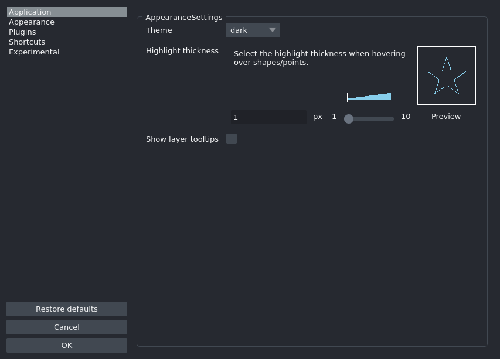
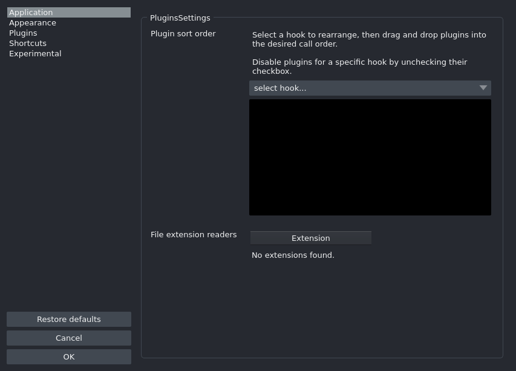
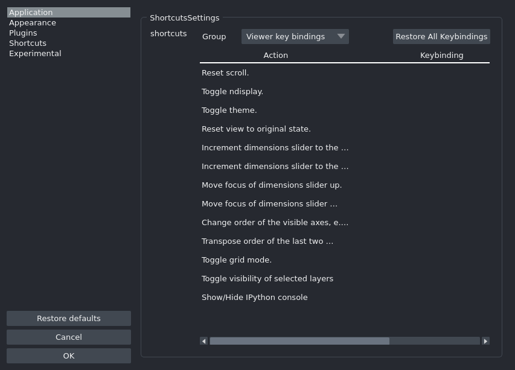
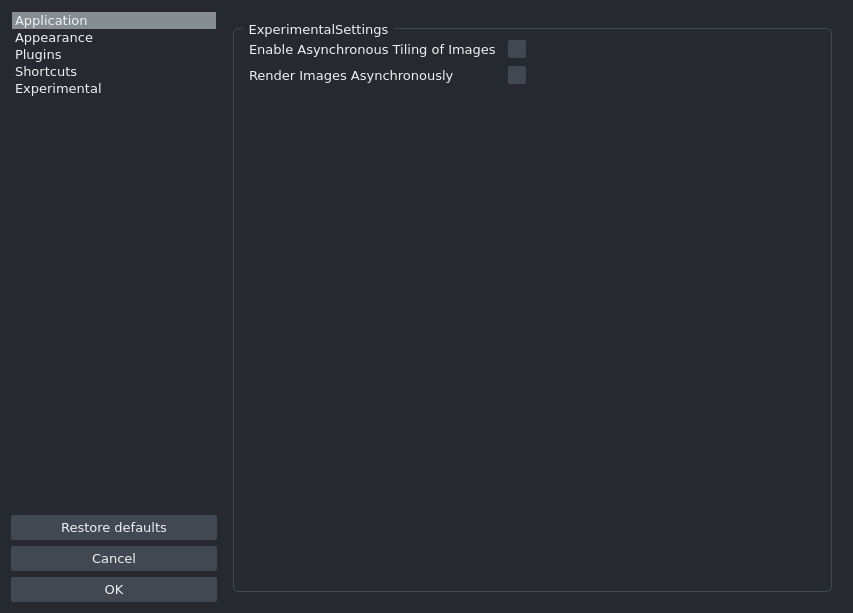
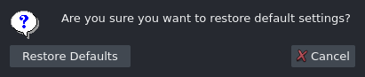

Preferences¶
Starting with version 0.4.6, napari provides persistent settings.
Settings are managed by getting the global settings object:
from napari.settings import get_settings
settings = get_settings()
# then modify... e.g:
settings.appearance.theme = 'dark'
Sections¶
The settings are grouped by sections and napari core provides the following:
APPLICATION¶
Main application settings.
Console notification level¶
Select the notification level for the console.
Access programmatically with
SETTINGS.application.console_notification_level.Type:
NotificationSeverity.Default:
<NotificationSeverity.NONE: 'none'>.UI: This setting can be configured via the preferences dialog.
First time¶
Indicate if napari is running for the first time. This setting is managed by the application.
Access programmatically with
SETTINGS.application.first_time.Type:
bool.Default:
True.
Grid Height¶
Number of rows in the grid.
Access programmatically with
SETTINGS.application.grid_height.Type:
ConstrainedIntValue.Default:
-1.UI: This setting can be configured via the preferences dialog.
Grid Stride¶
Number of layers to place in each grid square.
Access programmatically with
SETTINGS.application.grid_stride.Type:
ConstrainedIntValue.Default:
1.UI: This setting can be configured via the preferences dialog.
Grid Width¶
Number of columns in the grid.
Access programmatically with
SETTINGS.application.grid_width.Type:
ConstrainedIntValue.Default:
-1.UI: This setting can be configured via the preferences dialog.
GUI notification level¶
Select the notification level for the user interface.
Access programmatically with
SETTINGS.application.gui_notification_level.Type:
NotificationSeverity.Default:
<NotificationSeverity.INFO: 'info'>.UI: This setting can be configured via the preferences dialog.
IPython interactive¶
Toggle the use of interactive %gui qt event loop when creating napari Viewers in IPython.
Access programmatically with
SETTINGS.application.ipy_interactive.Type:
bool.Default:
True.
Language¶
Select the display language for the user interface.
Access programmatically with
SETTINGS.application.language.Type:
Language.Default:
'en'.UI: This setting can be configured via the preferences dialog.
Opened folders history¶
Last saved list of opened folders. This setting is managed by the application.
Access programmatically with
SETTINGS.application.open_history.Type:
List[str].Default:
[].
Playback frames per second¶
Playback speed in frames per second.
Access programmatically with
SETTINGS.application.playback_fps.Type:
int.Default:
10.UI: This setting can be configured via the preferences dialog.
Playback loop mode¶
Loop mode for playback.
Access programmatically with
SETTINGS.application.playback_mode.Type:
LoopMode.Default:
<LoopMode.LOOP: 'loop'>.UI: This setting can be configured via the preferences dialog.
Preferences size¶
Last saved width and height for the preferences dialog. This setting is managed by the application.
Access programmatically with
SETTINGS.application.preferences_size.Type:
Optional[Tuple[int, int]].Default:
None.
Saved folders history¶
Last saved list of saved folders. This setting is managed by the application.
Access programmatically with
SETTINGS.application.save_history.Type:
List[str].Default:
[].
Save window geometry¶
Toggle saving the main window size and position.
Access programmatically with
SETTINGS.application.save_window_geometry.Type:
bool.Default:
True.UI: This setting can be configured via the preferences dialog.
Save window state¶
Toggle saving the main window state of widgets.
Access programmatically with
SETTINGS.application.save_window_state.Type:
bool.Default:
False.UI: This setting can be configured via the preferences dialog.
Window fullscreen¶
Last saved fullscreen state for the main window. This setting is managed by the application.
Access programmatically with
SETTINGS.application.window_fullscreen.Type:
bool.Default:
False.
Window maximized state¶
Last saved maximized state for the main window. This setting is managed by the application.
Access programmatically with
SETTINGS.application.window_maximized.Type:
bool.Default:
False.
Window position¶
Last saved x and y coordinates for the main window. This setting is managed by the application.
Access programmatically with
SETTINGS.application.window_position.Type:
Optional[Tuple[int, int]].Default:
None.
Window size¶
Last saved width and height for the main window. This setting is managed by the application.
Access programmatically with
SETTINGS.application.window_size.Type:
Optional[Tuple[int, int]].Default:
None.
Window state¶
Last saved state of dockwidgets and toolbars for the main window. This setting is managed by the application.
Access programmatically with
SETTINGS.application.window_state.Type:
Optional[str].Default:
None.
Show status bar¶
Toggle diplaying the status bar for the main window.
Access programmatically with
SETTINGS.application.window_statusbar.Type:
bool.Default:
True.
APPEARANCE¶
User interface appearance settings.
Highlight thickness¶
Select the highlight thickness when hovering over shapes/points.
Access programmatically with
SETTINGS.appearance.highlight_thickness.Type:
ConstrainedIntValue.Default:
1.UI: This setting can be configured via the preferences dialog.
Show layer tooltips¶
Toggle to display a tooltip on mouse hover.
Access programmatically with
SETTINGS.appearance.layer_tooltip_visibility.Type:
bool.Default:
False.UI: This setting can be configured via the preferences dialog.
Theme¶
Select the user interface theme.
Access programmatically with
SETTINGS.appearance.theme.Type:
Theme.Default:
'dark'.UI: This setting can be configured via the preferences dialog.
PLUGINS¶
Plugins settings.
Plugin sort order¶
Sort plugins for each action in the order to be called.
Access programmatically with
SETTINGS.plugins.call_order.Type:
Mapping[str, List[napari.settings._plugins.PluginHookOption]].Default:
{}.UI: This setting can be configured via the preferences dialog.
Disabled plugins¶
Plugins to disable on application start.
Access programmatically with
SETTINGS.plugins.disabled_plugins.Type:
Set[str].Default:
set().
File extension readers¶
Assign file extensions to specific reader plugins
Access programmatically with
SETTINGS.plugins.extension2reader.Type:
Mapping[str, str].Default:
{}.UI: This setting can be configured via the preferences dialog.
Writer plugin extension association.¶
Assign file extensions to specific writer plugins
Access programmatically with
SETTINGS.plugins.extension2writer.Type:
Mapping[str, str].Default:
{}.
SHORTCUTS¶
Shortcut settings.
shortcuts¶
Set keyboard shortcuts for actions.
Access programmatically with
SETTINGS.shortcuts.shortcuts.Type:
Mapping[str, List[str]].Default:
{'napari:toggle_console_visibility': ['Control-Shift-C'], 'napari:reset_scroll_progress': ['Control'], 'napari:toggle_ndisplay': ['Control-Y'], 'napari:toggle_theme': ['Control-Shift-T'], 'napari:reset_view': ['Control-R'], 'napari:increment_dims_left': ['Left'], 'napari:increment_dims_right': ['Right'], 'napari:focus_axes_up': ['Alt-Up'], 'napari:focus_axes_down': ['Alt-Down'], 'napari:roll_axes': ['Control-E'], 'napari:transpose_axes': ['Control-T'], 'napari:toggle_grid': ['Control-G'], 'napari:toggle_selected_visibility': ['V'], 'napari:activate_label_erase_mode': ['1'], 'napari:activate_fill_mode': ['3'], 'napari:activate_paint_mode': ['2'], 'napari:activate_label_pan_zoom_mode': ['5'], 'napari:activate_label_picker_mode': ['4'], 'napari:new_label': ['M'], 'napari:decrease_label_id': ['-'], 'napari:increase_label_id': ['='], 'napari:activate_points_add_mode': ['2'], 'napari:activate_points_select_mode': ['3'], 'napari:activate_points_pan_zoom_mode': ['4'], 'napari:select_all': ['A'], 'napari:delete_selected_points': ['Backspace', 'Delete', '1'], 'napari:activate_add_rectangle_mode': ['R'], 'napari:activate_add_ellipse_mode': ['E'], 'napari:activate_add_line_mode': ['L'], 'napari:activate_add_path_mode': ['T'], 'napari:activate_add_polygon_mode': ['P'], 'napari:activate_direct_mode': ['4'], 'napari:activate_select_mode': ['5'], 'napari:activate_shape_pan_zoom_mode': ['6'], 'napari:activate_vertex_insert_mode': ['2'], 'napari:activate_vertex_remove_mode': ['1'], 'napari:copy_selected_shapes': ['Control-C'], 'napari:paste_shape': ['Control-V'], 'napari:select_all_shapes': ['A'], 'napari:delete_selected_shapes': ['Backspace', 'Delete', '3'], 'napari:finish_drawing_shape': ['Escape'], 'napari:reset_active_layer_affine': ['Control-Shift-R'], 'napari:transform_active_layer': ['Control-Shift-A']}.UI: This setting can be configured via the preferences dialog.
EXPERIMENTAL¶
Experimental settings.
Render Images Asynchronously¶
Asynchronous loading of image data. This setting partially loads data while viewing. You must restart napari for changes of this setting to apply.
Access programmatically with
SETTINGS.experimental.async_.Type:
bool.Default:
False.UI: This setting can be configured via the preferences dialog.
Enable Asynchronous Tiling of Images¶
Renders images asynchronously using tiles. You must restart napari for changes of this setting to apply.
Access programmatically with
SETTINGS.experimental.octree.Type:
Union[bool, str].Default:
False.UI: This setting can be configured via the preferences dialog.
Support for plugin specific settings will be provided in an upcoming release.
Changing settings programmatically¶
from napari.settings import SETTINGS
SETTINGS.appearance.theme = "light"
The preferences dialog¶
Starting with version 0.4.6, napari provides a preferences dialog to manage some of the provided options.
Application¶

Appearance¶

Plugins¶

Shortcuts¶

Experimental¶

Reset to defaults via UI¶
To reset the preferences click on the Restore defaults button and continue
by clicking on Restore.
